OK, Homesteaders . . . here's the last installment of Morton Salt's superior booklet, A COMPLETE GUIDE TO HOME MEAT CURING. MOTHER NO. 20 took you through cutting and curing beef, veal and wild game. This final section tells you how to cut a lamb carcass and how to keep cured meats.
Although we've serialized the complete handbook, we still advise you to drop $1.25 into the mail and add the manual to your farmstead bookshelf. It's packed with valuable information on butchering, cutting up and curing pork, beef, veal, lamb, poultry and wild game. Get your copy from Morton Salt Company, P.O. Box 355, Argo, Illinois 60501.
Again, our special thanks to Murray J. Pearthree, Morton Salt Regional Sales Manager, for granting us written permission to reprint from the booklet.
The black guide lines on the picture at the right clearly show where to make the cuts to separate the lamb carcass into the most desirable pieces for using fresh or for curing.
The flesh of lamb is light pink, deepening in color as it ages. The lamb meat is firm and fine grained, the fat is white, hard, and flaky.
The lamb carcass, like beef, has thirteen pairs of ribs. Ordinarily the lamb carcass is not split. In warm weather, however, the carcass may be split in halves down the backbone with a meat saw to aid in chilling. A sharp butcher knife, saw, cleaver, and boning knife are the necessary tools for cutting up the lamb carcass. There are many different ways of cutting the lamb carcass. Just how the cuts are made depends a good deal on how the meat is to be used, whether most of it is to be used up fresh, canned, or cured. The larger cuts, like the legs and shoulders, are the best cuts for curing. A leg of lamb, when neatly trimmed and cured, has somewhat the appearance of a ham.
Corned lamb is easy to make and the breast and shank are good cuts for corning. One of the best ways to use the small pieces and trimmings is to make lamb patties or lamb and pork sausage.
REMOVING THE SHOULDER Saw off the shoulder between the fifth and sixth ribs, as ordinarily a five rib chuck is preferable. After the shoulder is removed, cut off the neck on a line flush with the top of the shoulder, and saw off the shank. Separate the right and left shoulders by sawing through the backbone. Where a narrow shoulder is preferred, saw between the third and fourth ribs instead of between the fifth and sixth.
SAWING OFF THE BREAST PIECE Turn the carcass on its side with the legs toward you and remove the breast with a saw, cutting forward from the flank.
SEPARATING THE RACK FROM THE LOIN To remove the rack cut between the last two ribs and complete the cut with a saw through the backbone.
The rack is used for making a crown roast or, after splitting, rib chops are cut from the rack.
SEPARATING THE LOIN FROM THE LEG The loin is separated from the leg at the small of the back or at the pin bone.
Start the cut with a knife and complete with the saw through the backbone.
REMOVING LAMB SIRLOIN The sirloin is cut from the loin end of the carcass in whatever thickness is desired, The sirloin makes an excellent small size roast.
SPLITTING THE LAMB LEGS The legs are separated by splitting them down the center with the saw.
SHOULDER A long cut shoulder is used for making a boneless rolled shoulder. Remove the neck bone and ribs from the shoulder. Next unjoint the shoulder blade and remove arm and blade bones, working from the inside of the shoulder. Unjoint and remove arm bone from the shank and remove meat from around joint end of shank bone.
The shoulder is then rolled and tied, making an attractive long cut boneless shoulder. This can be used fresh as a roast or can be pumped and cured with Tender-Quick.
NECK Cut the neck in slices about three-quarters to one inch thick. They can be used for braising, stewing, or cooking in casserole. Another method of serving is to remove bone from the center of the slices and fill with sausage made from the trimmings.
SHANK Remove the shank when making a square cut lamb shoulder where it is desired to cure the shoulder, make shoulder chops, or to bone and roll the shoulder. The shank is used for stewing, meat broth, or small shank roast.
BREAST The breast, when boned and rolled, makes an attractive cut. Remove rib ends and breast bone and roll by starting at the shank, rolling tightly, and tie with heavy cord. The rolled breast is used for roast or for curing and canning.
RACK An attractive crown roast of lamb or rib chops is made from the rack. For making rib chops, split the rack lengthwise through the center and make chops by slicing between the ribs.
CROWN ROAST OF LAMB For making a crown roast the size of the roast depends on the number of ribs used. It is difficult to make a crown roast of lamb unless there are about six or eight ribs cut from each side of the rack. Usually eight ribs are used for the average size roast.
For making a crown roast, place the rack rib side up and saw ribs from each side of the backbone, as pictured above. Then trim out the backbone with a knife without separating the sets of ribs. Next remove a strip of meat about two inches wide from the end of the ribs and trim out meat between the ends of the ribs by trimming down one side of the rib, across and up on the next rib.
Bend the rack and mold into shape and tie the two sets of ribs together. Paper frills placed on the ends of the ribs add to the attractive appearance of the crown roast after it is cooked. Illustration shows the crown roast after it is formed, and the piece of backbone and two inch strip of meat that was trimmed from the rib ends.
When cooking wrap rib ends with salt pork and fill crown with bread stuffing.
LOIN The loin may be boned, rolled, and tied for making into a delicious, easily carved roast, or it may be cured and canned. To bone the loin, loosen the tenderloin on each side of the backbone, pulling the tenderloin back, then remove the ribs and backbone. After the loin is boned, tightly roll it and tie with strong white cord. Lamb chops may also be cut from the loin.
The thin outer membrane or fell should be removed from the chop cuts like rack and loin before cooking. Illustration shows fell being removed.
FLANK The flank makes an excellent piece for stewing when cut into small chunks, or it can be ground up with other trimmings for making lamb patties.
SIRLOIN The sirloin makes a small roast of excellent quality when boned, rolled, and tied. After sirloin is removed from the rack, trim out the backbone and hip bones.
When bones are removed, mold and roll the sirloin into shape, tying together with heavy cord at the flesh ends. Illustration above shows the boned and rolled sirloin ready for roasting or ready for curing with Tender-Quick.
LEG The lamb leg, when neatly trimmed in regular manner, as pictured above, makes an excellent piece for pumping and curing. It has somewhat the shape and appearance of a ham and after curing can be wrapped and kept for future use.
One of the best ways to use the small pieces and trimmings is to make lamb patties or cured lamb and pork sausage. Lamb patties are improved by adding one-third pork, which tends to bind them together and prevent crumbling when cooking.
For using the lamb leg fresh, the two most popular methods are to make either a French or American style leg.
FRENCH STYLE LEG Illustration below shows first step in making French style leg, which is scoring around the leg about two inches above the joint.
CUT AT BREAK JOINT Next cut at the break joint on inside of leg. The break joint is indicated by faint jagged lines just above the hock joint.
BREAK OVER TABLE EDGE After cutting at the break joint, grasp shank and bend down over edge of table until broken.
Next, twist shank until it comes free from the leg bone.
AMERICAN STYLE LEG The American style leg has most of the bone removed and when cooked will fit into a smaller pan or oven than the French style.
First, cut across break joint and remove shank bone, then cut meat with point of knife down each side of leg bone and remove leg bone at knuckle joint. Slit a pocket by separating fell from meat on inside of leg and tuck shank meat into this pocket. Use small skewers to hold shank meat in place.
First pump the larger pieces, and pieces that have bone, with a Tender-Quick pumping pickle, pumping 1 oz. to 1-1/2 oz. of pickle per pound of meat. The pumping pickle is made by mixing 2 lbs. of Tender-Quick per gallon of water.
After the meat is pumped, use about 6 lbs. Tender-Quick per 100 lbs. of meat. Divide the Tender-Quick into approximately three equal parts and first rub the meat with one-third of the Tender-Quick. Then in three or four hours rub on the second one-third, and after twenty-four hours rub on the balance. Pack the meat in a stone crock, box or barrel for curing, putting, the large pieces on the bottom and the smaller ones on top. Overhaul and repack the meat in a different position when the curing time is about one-half up.
The meat should remain in cure for about 1 1/2 days per pound; for example, 6-lb. pieces 9 days 10-lb. pieces 15 days. Where a light cure is desired, leave the meat in cure only one day per pound
When the curing time is finished, brush off the surplus cure, or lightly wash each piece in tepid water and let the meat drain thoroughly. After the pieces are thoroughly dry, wrap them in parchment paper and hang away in the driest, coolest, best-ventilated place available. If the meat is damp when hung away, or kept in a damp warm place, it will mold much faster than if it kept dry and cool and in a well ventilated place. A little mold, however, does not hurt the meat as it can easily be washed off with vinegar or trimmed off when the meat is used.
SWEET PICKLE CURE
After the meat is pumped, pack it in a stone crock or clean, well scalded barrel, putting the heavy pieces at the bottom and lighter ones on top. Then mix a TenderQuick curing pickle at the rate of 2 lbs. Tender-Quick per gallon of water. The water should be previously boiled and allowed to cool. Stir the curing pickle until the Tender-Quick is completely dissolved. Pour the curing pickle over the meat until the meat pack begins to shift, then weight the meat down with a clean stone or other weight and pour in enough additional curing pickle so that the top layer of meat is a few inches below the pickle. It will take five or six gallons of curing pickle for 100 lbs. of meat, depending on how closely the meat is packed.
LENGTH OF CURING TIME
Leave the meat in the curing pickle about 2 days per pound. Where a light cure is desired, leave the meat in cure 1 1/2 days per pound. The meat should be overhauled and the position of the pieces changes when the curing time is about one-half up. When overhauling, it is best to remove the pickle, then change the position of the pieces by repacking, and pour the pickle back over the meat.
After the curing time is up, wash the meat in tepid water and let it dry thoroughly. When it thoroughly dry, wrap in parchment paper and hang away in a cool, dry, well-ventilated place.
Meat that is properly cured will keep for many months, the exact time depending upon the strength of the cure, the kind and cut of meat, and the care with which it is wrapped and stored.
Meat to be used shortly after it comes from the cure should not be given as heavy a cure as meat that is to be kept for a long time.
Very often someone will state that the meat they have just cured is too salty. This should be controlled by the individual when putting the meat in cure. Meat that is to be used up soon should have a light cure and should not remain in the cure longer than the necessary curing time. Weather conditions help control the length of time meat should cure for best results, as it requires longer for meat to take the salt if the weather remains real cold than it does during favorable curing weather.
Bacon is usually at its best shortly after it comes from the cure and for this reason most people prefer to use up the bacon during the spring and early summer. When properly cured and wrapped, however, bacon can be kept over for a good while, but should not be kept longer than a year. Bacon has a high per cent of fat meat and fat meat turns yellow and gets rancid quicker than lean meat.
Shoulders should be used up before the hams as shoulders are more apt to crack open and allow mold to penetrate.
Hams usually improve with age, being at their best after they are about a year old.
Beef and mutton do not keep as well as pork and, therefore, should be used up sooner.
Regardless of the way the meat was cured, or the kind of meat, proper care when storing: the meat is necessary if it is to be kept in good condition for any length of time. Following are some of the points to observe for keeping meat.
1. Keep meat dry. The moisture in the air of the room where meat is stored will condense on the meat and favor bacterial growth. Moisture will also cause mold to develop more rapidly.
2. Keep meat cool, Heat also encourages bacterial activity, causing decay.
3. Keep well ventilated. Meat absorbs flavors and odors very rapidly. Ventilation will keep the air free from taints, as well as prevent the condensation of moisture on the meat.
4. Keep meat away from direct light. Direct sunlight discolors meat, therefore, the place where the meat is stored should be kept dark an this will also help keep flies away.
5. Keep each piece separate. If the pieces meat touch or hang too close together, it will prevent free air circulation and sweating will often take place at the point of contact.
6. Keep meat storage room screened. Flies rats, and mice should never be allowed to get in the room where meat is stored, and flies should not be allowed to light on the meat as they carry bacteria which can cause decay and actual spoilage.
SKIPPERS The skipper is the larva of a small black fly which is found in most sections of the country. These flies are small enough to go through ordinary window screening and for this reason a very fine screening should be used for protecting meat storage rooms. The fly lays eggs in the crevices of the meat and the skipper hatches out and feeds on the meat.
The skipper is a slender white maggot about 1/3 of an inch long when full grown. The skipper burrows into the interior of the meat, eating out the meat tissues until the entire piece of meat is ruined.
As the skipper fly is not active during cold weather, the best time to butcher and cure meat that is to be kept for some time is during the winter months. The curing box or curing room should be protected with a fine mesh screen and the meat should be washed and wrapped as soon as practical after curing, in order to fully protect it.
WRAPPING After curing, meat should be wrapped only when it has been allowed to thoroughly dry. When meat is not wrapped after it is dry, a slow oxidation of fat takes place, which causes rancidness, dark color, and strong flavor. Wrapping meat tends to prevent this, besides furnishing the best possible protection against flies and other insects.
Before wrapping meat, sage or black and red pepper or other spices may be rubbed lightly on each piece of meat for added flavor.
Wrap the meat first in cheesecloth or unbleached muslin and wrap each piece separately. Clean flour or cornmeal sacks make satisfactory wrapping for meat. Next wrap the meat tightly in paper. Parchment paper is excellent but any heavy plain paper will do. After wrapping, put the meat in bags or wrap again in heavy brown paper. It is difficult to prevent some mold from forming. With cloth next to the meat, however, much of the mold that forms will be removed with the cloth whereas if paper is next to the meat it will stick to the meat and be hard to remove.
Turn the strings in before wrapping. Do not hang the meat in storage by strings that are tied directly to the meat. The wrapped meat should be tied tightly and looped from the outside and hung by this outside string, If a paper bag is used, fold the top of the bag over several times and tie it tightly. If the meat is simply wrapped in paper, it is a good idea to seal the edges with glue. Further protection can be added by painting the entire outside of the entire piece of wrapped meat with yellow wash or with ordinary lime wash to which glue has been added.
YELLOW WASH The following is a standard formula for yellow wash and is sufficient for about 100 lbs. of meat:
1 oz Dry Cure
6 oz. Flour
3 lbs. Barium Sulphate
1 1/4 oz. Yellow Ocher
Mix the flour in a half pail of water, stirring until smooth. Dissolve the Yellow Ocher in one quart of water and add this solution, together with the glue, to the flour mixture in the pail. Bring to a boil and add the Barium Sulphate slowly, stirring constantly. Make the wash the day before it is to be used so that it will have time to cool. Stir frequently while using and apply with a brush.
PROTECT MEAT AGAINST SKIPPERS AND MOLD When meat is properly washed, dried, and wrapped, it will keep in good condition. This is the best protection against skippers, insects, and mold. It is very important, however, to see that the meat is thoroughly dry before it is wrapped, because if the meat is still damp when wrapped, mold will readily form. A reasonable amount of mold does not hurt the meat. Very often high quality meat is allowed to mold and before the meat is cooked the mold is removed.
Therefore, if mold should develop on your meat, it need cause no serious worry because it can usually be ribbed or cut off without loss. Mold may easily be removed by scrubbing the surface of the meat with a brush dipped in hot water. Another good way is to wash the meat with a cloth dipped in vinegar and then rub the meat with a little warm lard.
USE SHOULDERS FIRST Mold is most apt to appear on shoulders because they crack open easier. It is good practice to use the shoulders first to avoid excess mold.
When a ham or large piece of meat is cut. and it will be some time before the balance of the meat is used, the cut surface should be smeared over with lard or covered with oiled paper.
Modern curing methods and your home freezer now bring exciting new variety to the meat menu and make possible an endless variety of new meat dishes all year 'round.
YOUR HOME FREEZER KNOWS NO SEASON Now you can have mild cured meal and freshly made sausage any time of the year.
A new, easy method of curing meat that works hand in hand with fresh meat or your home freezer, is bringing exciting changes to the dinner table. Not since the first freshly cured ham was hung in fragrant hickory smoke, has the homemaker had such an opportunity to vary the meat menu so easily and economically.
You can work the curing magic with any pork cut, shoulder slices, boneless loin, spareribs or backribs and give a tempting, mildcure flavor to other meats, such as beef, poultry and game.
This seasoning method, developed by the Morton Salt Company, so simplifies curing that you can do the job right in your kitchen. Just rub Tender-Quick (or place in Tender-Quick brine) over pieces of thawed meat selected from your freezer. Then store in your refrigerator. Leave them for a few hours, or overnight, depending on the cut of meat and amount of cured flavor desired and you'll have mildly cured, delicately flavored meat ready to cook.
Whether you butcher your own meat for processing and freezing, or buy in quantity already processed, kitchen curing will fit handily into your program.
No need to store whole hams or large pieces that are difficult to wrap and waste freezer space. Cut fresh hams into three parts . . . the ham butt, center slices and shank. They pack away nicely and offer a whole new storehouse of varieties.
Improved quality is another advantage of kitchen curing. Meat is pleasingly firm.
You'll also enjoy the uniform flavor that kitchen curing provides. By varying the curing time you can achieve an extremely mild to a full, rich flavor, to suit the most particular member of your family.
THAWING FROZEN MEAT All meat taken from the home freezer for curing must be thawed before curing. Take the meat from the freezer (do not remove the wrapper) allow it to stand at room temperature until it shows signs of thawing. Then remove wrapper and place in a refrigerator, or any place where the temperature is not lower than 38° and not higher than 50°. 12 hours or overnight is enough time to thaw the average size piece of meat.
Cuts of meat which are to be mild-cured in brine for only a few hours, can be cured at room temperatures up to 70 degrees. Meat should never be put back in the freezer or frozen while curing or after curing.
CARE OF MEAT WHEN CURED Cured meat should be kept under refrigeration or in any cool place where the temperature is about 40°. Cured meat keeps well under refrigeration and does not lose its fine flavor. It is best when used within 5 days. When held longer than 5 days, it may get sticky. When this happens, rub the outside surface with plain salt until the sticky condition is gone, then wash in cold water, dry, and place under refrigeration. The meat should then be used in the next 2 or 3 days.
IT'S EASY TO DRY CURE MEAT IN PLASTIC BAGS The picture below shows how easy it is to cure meat in plastic bags and how neatly it's done. You apply Tender-Quick to the meat you wish to cure-you do it right in your kitchen without any mess-it's done quickly and the meat cures fast. Slices and thin pieces cure in 1 to 3 days. Larger pieces cure in 7 to 10 days. When the Tender-Quick has been applied, put the meat in a plastic bag, tie the open end of the bag and put it into the refrigerator or any cool place not over 45°. Allow the meat to remain in cure the proper length of time and it is then ready to use. The curing time and the right amount of cure to use for each cut of meat is specified in the curing directions.
CURING BONELESS PORK LOIN OR CANADIAN BACON Fresh or frozen pieces may be cured.
For dry cure, use 2 heaping tablespoons of Tender-Quick for each pound of meat. Rub the Tender-Quick on all surfaces, then put the meat in a plastic bag and tie the open end. Place in a refrigerator not over 45° allow to cure 5 to days. When curing time is up, remove the meat from the bag, wash, then dry and the meat is ready to use.
For brine cure, mix 1 cup of Tender-Quick to 3 cups of water. Place the boneless loin in a container, then pour enough brine over the meat to completely cover it. Place in a refrigerator not over 45°. Allow to cure 6 to 10 days. When curing time is up, follow above dry cure directions.
This cut of meat, when cured, may be sliced and used as Canadian Bacon.
CURING BACON Any piece of fresh bacon side, or frozen side which has been thawed, can be cured. To dry cure, use 1 heaping tablespoon of Tender-Quick for each pound of meat. Rub the cure into the piece of meat and put it into a plastic bag. Place it in the refrigerator not over 45°.
Curing time for dry or brine cure-allow 5 to 7 days; when curing time is up, remove from container or plastic bag, wash, dry and place in refrigerator.
CURED BONELESS HAM Divide a fresh ham into three parts; the knuckle and the cushion are the ideal pieces for curing. The small slices taken from the butt end of the cushion can be made into steaks; they may be cured in slices the same as pork chops. The shank meat and trimmings can be packaged, frozen, and later used for making pork sausage.
Brine Cure: Mix 1 cup of Tender-Quick to 3 cups of water. Place boneless pieces of ham in a clean container. Pour enough brine over meat to completely cover it. Weight meat down to keep it under the brine. Place in a refrigerator about 45°.
Dry Cure: Use 2 heaping tablespoons of Tender-Quick for each pound of meat; rub the Tender-Quick on all surfaces of the meat, put the piece of ham in a plastic bag, tie up the open end, and place in a refrigerator not over 45°.
Boneless shoulders and Boston Butts are cured in the same manner as boneless hams.
The pieces are ready to use as they come from cure. If not to be used when taken from cure, wash, dry and place in refrigerator and use within 10 days. Ideal for baking or boiling, can be sliced for frying or cut into thick slices and baked.
Curing Time: 6 to 8 pound pieces, 10 days; 9 to 12 pound pieces, 12 days; larger pieces, 15 days.
CURED PORK LOIN Pieces of fresh or frozen pork loin can be cured.
A fully-cured loin, when baked, has the color of ham, partly cured loin is pink around the edges and the color of fresh pork roast in the center.
For dry cure, use 2 heaping tablespoons of Tender-Quick for each pound of meat; rub the entire surface with Tender-Quick. Put the piece of pork loin in a plastic bag and tie the open end. Place it in the refrigerator, not over 45°, allow to cure 3 or 4 days, for a partially cured loin-6 to 8 days for a full-cured loin.
For brine cure, mix 1 cup of Tender-Quick to 3 cups of water. Put the piece of loin in a clean container with enough pickle to completely cover the loin. Place it in the refrigerator, not over 45°. Allow to cure 4 to 5 days for a partly-cured loin, 8 to 10 days for a full-cured loin.
Cured pork loins may be used immediately or placed in the refrigerator and used several days later.
There is much variety to be had from a cured pork loin. Remove the bones, bake the boneless loin or use as Canadian-style bacon. The ribs may be used for BarB-Q. Cut loin into chops to fry or broil-thick chops may be slit, making pockets for stuffing.
CURED PORK CHOPS Fresh or frozen pork chops can be cured. Thaw frozen chops before curing.
Mix 1/3 cup Tender-Quick to 1 cup of water. Put the chops in a clean container with enough brine to completely cover them. Allow to cure 6 to 8 hours, or, overnight for extra thick chops; then chops are ready to use. Cured chops taken from the brine may be used immediately or several days later. They may be fried, broiled or baked. For variety, slit and stuff before cooking.
CURED SPARE RIBS Fresh or frozen ribs can be cured. Thaw frozen, ribs before curing.
Dry Cure: Use 1 heaping tablespoon of Tender-Quick for each pound of ribs. Rub the cure on all parts of the spare ribs; they may be left whole or cut into 3 or 4-rib strips. Put the ribs in a plastic bag, tie the open end and allow to cure 1 or 2 days in a refrigerator not over 45°.
For brine cure, mix 1/3 cup of Tender-Quick to 1 cup of water. Cut the spare ribs into 3 or 4-rib pieces; put the pieces in a clean container with enough brine over ribs to completely cover them. Place in a refrigerator, not over 45°. Allow to cure 1 to 2 days.
When curing time is up wash and they are ready to use for Bar-B-Q, baking, boiling or frying. Cured ribs have more flavor and better color when cooked.
CURED CORNED BEEF Fresh beef or beef f rom the freezer can be cured.
Make a brine by mixing 1 pound of Tender-Quick to 2 quarts of water; for small batches, 1 cup of TenderQuick to 3 cups of water.
Place meat in a clean container,.allowing some space for the curing brine. Pour over meat enough brine to completely cover it. Weight it down to keep it submerged. Cure in a refrigerator, not over 45°. Cure 14 to 20 days, depending on the thickness of the piece of meat. If the meat is not used at the end of the curing time, leave in brine 7 days longer. If it is not used then, it should be taken from the brine, washed, dried, and placed in the refrigerator. Cook within five days.
To cure small pieces for boiled dinners or for making corned beef hash or a loaf, prepare the curing brine as directed above. Place the pieces of meat in a clean bowl or jar, add enough brine to cover. Allow to cure 6 to 7 days. When curing time is up, remove meat from container and cook.
To dry cure, use 2 tablespoons of Tender-Quick for each pound of meat. Rub cure into meat. Then slip into a plastic bag, tie open end, put bag in refrigerator. Cure 7 to 14 days depending on the thickness of the meat. Handle same as for brine cure.
CURED HAM The ham butt can be baked as a roast, uncured, or cured and baked. The slices can be cured one or more slices at a time, and the shank used for boiling or take out the bones and use the boneless meat for making sausage.
To dry cure the ham butt, apply 2 tablespoons of Tender-Quick for each pound of meat; put the meat into a plastic bag and allow to cure 1 1/2 days per pound. The slices are cured by applying 1 tablespoon Tender-Quick per pound of meat or per average slice of ham. When cure has been applied, put the slices of ham in plastic bags. Tie the open end of the bags and place in the refrigerator for curing-ham slices are ready to use after curing for 24 hours. It is advisable to use the cured slices within five days.
This method of cutting and storing hams in the home freezer and then, many months later, curing and making sausage is practical and economical because it eliminates the storing of hams whole or in pieces which are difficult to wrap and which also take up a lot of extra space in your home freezer.
CURED TRIMMINGS Spread the trimmings on a flat tray and add 2 heaping tablespoons of Tender-Quick to each pound of meat; mix and pack in a bowl, plastic bag or mason jar, to cure. For brine cure, mix 1/3 cup of Tender-Quick to 1 cup of water. Place the meat in a clean bowl or mason jar and cover with brine.
Curing should be done in a refrigerator, not over 45°. Allow pork to cure 2 or 3 days, beef-5 to 6 days.
Cured trimmings can be used for making jellied loaves, smoked sausage, summer sausage, Mettwurst, special pork loaves, vinegar pickled meats, etc.
CHICKEN IN TENDER-QUICK BRINE Use fresh chickens or chicken from the freezer.
Mix 1/2 cup Tender-Quick to 3 cups of water. Place chicken or pieces of chicken in a clean container and pour enough brine over the chicken to cover. Place in refrigerator, not over 45°. Allow to remain in brine 8 to 12 hours. Placing chicken in Tender-Quick brine makes the meat firm and gives the chicken a more desirable flavor when cooked. It draws out any blood left around the joints and takes away that barnyard taste found in poultry.
You will never know how much better fried, boiled, stewed or baked chicken can taste until you have tried placing them in Tender-Quick brine.
CURED DOMESTIC RABBIT Rabbits can be cured whole or cut in pieces. Wash rabbit and place in a clean container. Make a curing brine by mixing 1/2 cup of Tender-Quick in 2 cups of water. Pour enough brine into the container to completely cover the rabbit.
Allow to cure 24 hours, then take it from the brine, wash, and it is ready to cook. If it is not to be cooked immediately, place in the refrigerator and cook within 3 to 5 days after it is cured. Cured rabbit may be fried, broiled, baked or stewed.
Tender-Quick brine draws out the blood, firms the meat and improves the flavor.
Wild rabbits and small game placed in TenderQuick brine before being cooked will have an improved flavor and it helps reduce the strong game taste.
PORK SAUSAGE Fresh, unseasoned trimmings, when frozen, hold their fresh flavor and can be used for making delicious tasting pork sausage at any time.
Freeze fresh pork trimmings in 2 to 3 pound packages. Trimmings should be 1/3 fat and 2/3 lean. When ready to make sausage, take a package of frozen trimmings from the freezer, allow to stand at room temperature 2 or 3 hours, then remove wrapper or bag and cut meat into small pieces convenient for grinding. Add Morton's Meat, Poultry and Sausage Seasoning, 1 level tablespoon per pound of meat, mix thoroughly, and grind into the same container in which the meat and seasoning were mixed-any seasoning left in the container will be picked up and mixed into the freshly-ground sausage.
Sausage meat may be made into rolls, placed in the refrigerator and, when chilled, sliced into patties as needed, or it may be stuffed into casings.
CURED TURKEY Fresh turkeys or turkeys taken from the home freezer or locker can be cured. Turkeys, capons, and chickens are cured the same way. Select only plump, thick-breasted young birds.
Make the curing brine by mixing 1 pound of Tender-Quick to 3 quarts of water. Mix until Tender-Quick is completely dissolved.
Put the turkey, capon or chicken into a clean container just large enough to hold it, allowing space for the brine. Pour into the container enough brine to completely cover the bird. Weight it down to keep it submerged. Small turkeys up to 10 pounds, capons and chickens, cure 3 days; 11 to 16 pound turkeys, cure 4 days; over 16 pounds, cure 5 days.
CURED BEEF TONGUE Fresh tongues and frozen tongues from the freezer, when thawed, can be cured. Mix I cup Tender-Quick to 3 cups water. Wash tongue in warm water, then place in a clean container. Pour into the container enough brine to completely cover the tongue. Place in a refrigerator or any cool place, temperature not over 45°. Allow to cure 14 to 20 days, depending on the size of the tongue.
Calf, lamb and pork tongues, cure 7 to 10 days.
PICKLED PIGS FEET OR HOCKS Use cured feet for hocks. Curing gives better flavor and a pleasing pink color to the pickled meat. Place feet or hocks in a container and cover with water. Bring to a slow boil, and allow to cook until tender. Wash in hot water. If feet were cooked whole, split or cut into quarters. Hocks may be left whole or made boneless.
While feet or hocks are still hot, pour enough vinegar pickle (recipe below) over them to cover. Allow to cool at room temperature, then place in refrigerator. Allow 2 to 3 days for vinegar pickle to penetrate.
VINEGAR Pickle
2 cups vinegar
a bay leaf
1 teaspoon whole cloves
1 small onion, sliced
Combine above ingredients and bring to a boil. Then lower heat and simmer for 20 minutes. Strain liquid to remove solids, and add 1 1/2 cups of hot water and 1 tablespoon of sugar. Double or triple the above recipe for large amounts. Pour hot liquor over the warm meat; vinegar flavor penetrates faster when used hot on warm cuts of meat.
|
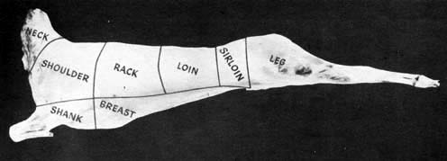 Finish by sawing through the backbone. |
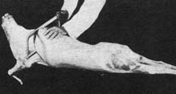 Boned and Rolled Shoulder ready for curing. |
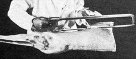 American Style leg with the bones removed. |
|
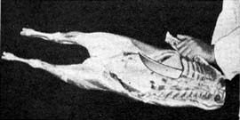 French Style leg showing shank bone removed. |
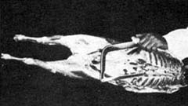 Pumping Leg of Lamb and Boneless Rolled Shoulder with Tender-Quick Before Putting in Cure. |
|
|
|
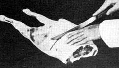 |
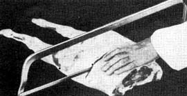 |
|
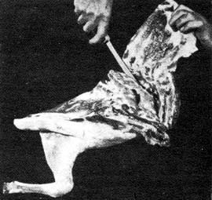 |
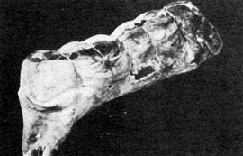 |
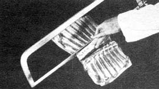 |
|
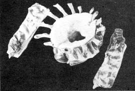 |
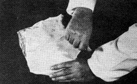 |
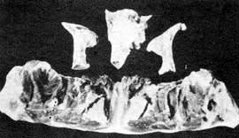 |
|
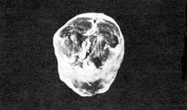 |
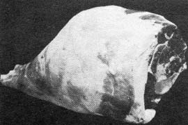 |
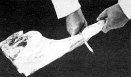 |
|
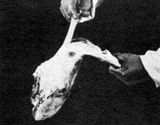 |
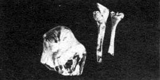 |
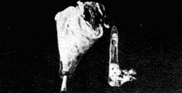 |
|
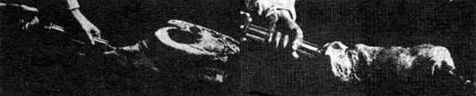 |
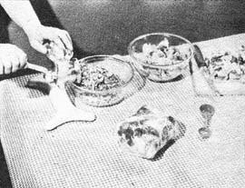 |
|